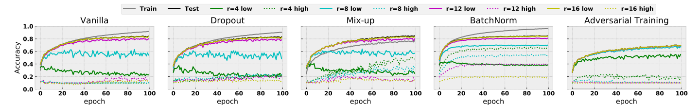

Information
- Title: High Frequency Component Helps Explain the Generalization of Convolutional Neural Networks
- Author: Haohan Wang, Xindi Wu, Zeyi Huang, Eric P. Xing
- Institution: Carnegie Mellon University(卡内基梅隆大学)
- Year: 2020
- Journal: CVPR
- Source: Open access, Arxiv, Github
- Cite: Haohan Wang, Xindi Wu, Zeyi Huang, Eric P. Xing; Proceedings of the IEEE/CVF Conference on Computer Vision and Pattern Recognition (CVPR), 2020, pp. 8684-8694
- Idea: 作者研究了泛化性与频率的图像的关联，是一篇比较有启发的研究的讨论的论文
1 | @InProceedings{Wang_2020_CVPR, |
Abstract
作者研究了图像的频谱图与卷积神经网络（CNN）的泛化之间的关联，CNN 会捕捉图像的高频成分。
Introduction
作者从数据的方面研究了CNN 的泛化性，作者认为，CNN 的泛化性使人类与模型之间感知差异的直接结果，CNN 可以用比人类更高粒度的视角查看数据。
如图所示，作者认为图像的高频成分与语义存在联系，而模型主要学习到的是高频成分，所以导致了一些反直觉的现象如对抗样本。
上图展示了 CIFAR10 中一些样本及其高频和低频的预测结果，左中右分别是原图、低频、高频图像，可见高频分量的预测相对比较准确，低频虽然看起来与原图差不多，但模型预测结果却截然不同。
基于这些观察，作者试图通过输入图像频谱的差分相应来解释，这篇文章贡献有：
- 说明了 CNN 利用图像高频成分以牺牲鲁棒性为代价提高精确度，揭示了 CNN 准确性与鲁棒性直接的均衡
- 以频谱图为工具提出假设解释 CNN 的一些泛化行为
- 提出了可以提高 CNN 对抗鲁棒性的方法，无需训练和微调
Method
高频成分与泛化性的讨论
先给出一些符号表示
- 样本和标签：⟨x, y⟩
- 参数为 θ 的CNN：f(⋅; θ)
- 参数为 ℋ 的人类模型：f(⋅; ℋ)
- 损失函数：l(⋅, ⋅)
- 验证预测准确率的函数：α(⋅, ⋅)，预测正确为 1.0 否则为 0.0
- 计算两个向量的距离：d(⋅, ⋅)
- 傅里叶变换：ℱ(⋅) 和逆傅里叶变换：ℱ−1(⋅)
- 样本的频域组成：z，有 z = ℱ(x) 和 x = ℱ−1(z)，因为傅里叶变换和逆傅里叶变换都会引入复数，为了确保模型输入一致忽略复数的虚数部分
首先将 x 进行分解得到图像的低频成分（LFC）和高频成分（HFC）： x = {xl, xh}： $$ \begin{align*} \mathbf{z} = \mathcal{F}(\mathbf{x}), \quad \quad \mathbf{z}_l, \mathbf{z}_h =t(\mathbf{z}; r), \\ \mathbf{x}_l = \mathcal{F}^{-1}(\mathbf{z}_l), \quad \quad \mathbf{x}_h = \mathcal{F}^{-1}(\mathbf{z}_h), \end{align*} $$ 其中 t(⋅; r) 表示一个分离高频和低频的阈值函数，根据超参数半径 r 确定，考虑 n × n 深度 𝒩 的灰度图，则有 z ∈ 𝒞n × n 其中 𝒞 表示复数。用 z(i, j) 表示 z 在 (i, j) 位置的值， ci, cj 表示质心，则 zl, zh = t(z; r) 定义为： $$ \begin{align*} \mathbf{z}_l(i,j) = \begin{cases} \mathbf{z}(i,j), \,&\textnormal{if} \, d((i,j),(c_i,c_j)) \leq r \\ 0, \, &\textnormal{otherwise} \end{cases}, \\ \mathbf{z}_h(i,j) = \begin{cases} 0, \, &\textnormal{if} \,d((i,j),(c_i,c_j)) \leq r \\ \mathbf{z}(i,j), \, &\textnormal{otherwise} \end{cases} \end{align*} $$ 该文章中 d(⋅, ⋅) 一般使用欧氏距离，若 x 是多通道图像则应用到每个通道上。
假设：人类只能感知低频，而模型可以感知低频和高频 y := f(x; ℋ) = f(xl; ℋ) CNN的训练目标是 arg minθ l(f(x; θ), y) 等价于 arg minθ l(f({xl, xh}; θ), y) 模型可以利用高频成分来最小化 loss 是会导致模型预测结果与人类观察不同。这个观点被经验的证明是正确的。如前面的实验结果图所示。
即系考察 CNN 的鲁棒性与准确率之间的平衡，对于准确率，定义为 𝔼(x, y)α(f(x; θ), y) 对抗鲁棒性为 𝔼(x, y)minx′ : d(x′, x) ≤ ϵα(f(x′; θ), y) 其中 ϵ 是对抗扰动的上界。
然后作者给出了第二个假设：对于模型 θ 存在样本 ⟨x, y⟩ 满足 f(x; θ) ≠ f(xl; θ) 根据前面两个假设，可以得到一个推论：
在对于模型 θ 在任意距离函数 d(⋅, ⋅) 和界 ϵ 满足 ϵ ≥ d(x, xl) 存在样本 ⟨x, y⟩ 使得模型不能准确预测又不鲁棒
重新思考数据
有论文任务模型记忆容量很大可以记忆打乱标签的数据，但问题是：如果模型可以简单记忆数据，为什么它不直接记住所有数据来减少训练损失而是要学习关注数据之外的泛化模式呢？
作者提出了如下假设：尽管最小化训练损失的结果相同，但模型在下面两张情况下有不同的特征水平
- 在原始标签的情况下，模型会先学低频成分，在渐渐学习高频成分来提高准确率
- 在打乱标签的情况下，低频成分与标签之间的关联因为打乱顺序而丢失了，当模型同等学习高频成分和低频成分时必须记忆图像
上图显示了作者使用不同标签模式下不同阈值的低频成分在训练过程的精度变换情况。首先打乱标签使用了比自然标签更多的 epoch 才能达到同样的训练准确率，说明记忆样本是一种“非自然”的行为而不是去学习泛化模式。通过对比低频训练曲线，可以看出自然模式比打乱模式学到更多的低频模式。相反打乱模式在 r = 4 的时候几乎没有学到任何低频成分，而在自然模式即使是在训练的最早期阶段也有 40% 的低频成分。这表明自然模式更倾向于低频成分而打乱模式则对低频和高频没有倾向。
作者对这种现象的解释是：因为数据的标签是人类组织和标注的，所以低频成分和标签之间的关联比高频成分更强，网络学习低频成分能更大程度的降低目标损失。
上面的实验证明低频成分比高频成分更“泛化”，这也证明了作者上面的说法。
作者还提出了一个问题：网络对于低频成分的倾向性使技术发展过程中“幸存者偏见”导致的结果，换而言之是一种自然选择的结果，不符合要求的想法无法发表。
启发式训练
作者在不同的半径条件下测试了不同的启发式方法对低频成分和高频成分的测试准确率。
首先作者考察了 Batch Size 对泛化的影响，上图的实验结果表明，小批量准确率更好，而大批量泛化性好一些。此外，泛化差距与模型倾向于学习高频分量是相关的：使用更大的 epoch 训练的模型对高频分量没什么影响，准确率差异也不大。这其中的原因作者称是模型在拟合人类的行为（人类标注）能实现最小的泛化差距。
一些其他的训练方法：
- dropout：没什么变化
- Mix-up：对高频成分更加关注，准确率也有所提高
- 对抗训练：准确率相对较低，但泛化差距也较小，作者认为是鲁棒性和准确率之间的一个平衡
- BatchNorm：对低频成分和高频成分都更加关注了
作者提出：BN 将不同信号之间的分布差异消除了，所以网络更容易捕捉到不同预测信号，下面的实验佐证了这一观点。
对抗攻防
由卷积定理：图像的卷积运算等价于图像频域的逐元素乘法，因此，如果卷积核在高平区域的权重忽略不就，那么卷积核将对对应的高频成分进行加权，但仅适用于第一层，后续的因为不与数据直接关联。所以若是想要让模型忽略高频成分，作者提出强迫模型学习到在频域高频段只有可忽略权重的卷积核。
可以从上图中的 (a, b) 可以看出经过对抗训练的卷积核趋于平滑，作者探究了通过平滑卷积核来提高对抗鲁棒性的可能性，对卷积核 w，用 i, j 分别表示其行列索引，用 wi, j 来表示对应 i 行 j 列的值，用 𝒩(i, j) 表示其领域的值，ρ 是一个超参数 wi, j = wi, j + ∑(h, k) ∈ 𝒩(i, j)ρwh, k 𝒩(i, j) 固定为邻居八个位置的值，边界外的值用边界上的值进行填充。
下面的表格展示了作者的这个方法的效果
可见对于干净图像是有所损伤的，但确实能提高一定的鲁棒性
一些其他讨论
简单看看
目标图像较小的时候仅依靠低频可能效果不太好，高频图像对于小目标可能比较重要。
问题：高频成分仅仅是噪声吗？作者尝试使用 SVG 去噪，结果表明答案是否定的。
Conclusion
在这篇文章中，作者研究了图像频谱对 CNN 的泛化性的影响，作者提出：数据中有很多信号，但不是所有信号都与人类的视觉偏好相符。其他的一些讨论如下：
- CNN 可以关注到与人类视觉不一样的高频组成，导致泛化性能的差距，如打乱标签数据和对抗鲁棒性
- 提高准确的启发式方法可能鼓励模型关注到高频分量，但也可能会导致鲁棒性的降低
- 鲁棒的模型有平滑的卷积核，但反之不总是成立
- 目标检测中有同样的结论
启示和目标：
- 准确率排行榜可以推动研究想着某个方向发展，但一定能反映模型与人类的一致性，这很重要
- 作者希望能降原始图像与低频率对应的性能一起报告
- 人类可能也存在归纳偏差，即人类识别物体可能更倾向于低频信号，这对于未来工作可能有启发
如有错漏，欢迎指正！如果对你有帮助的话，请给我点个赞吧~
欢迎前往 我的博客 查看更多笔记